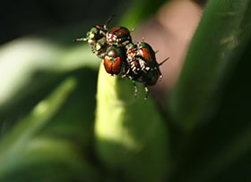

Integrated Pest Management
Weather patterns not only affect crop growth and development, but also plant pathogens, beneficial and harmful insects, and weed species present in the agro-ecosystem.
Insects have been affected by weather in recent years; the newest example being the increases in populations of spider mites across much of the Midwest. There also have been documented changes in spring arrival of many insect species due to climate change, specifically warmer temperatures, which is the single most important climatic factor for insects. The arrival of invasive species such as the brown marmorated stinkbug and kudzu bug and problems with other damaging insects underscores the importance of understanding how climate may affect insect pest survival and movement.
There have been disease outbreaks, in recent years, directly related to extreme weather events including white mold and sudden death. Researchers predict that leaf and root pathogens will be more problematic because of an overall increase in humidity and frequency of heavy rainfall events projected for many parts of the United States. However, other extreme weather events such as drought, hail events, and high winds also will affect diseases from year to year and region to region.
Weed competition and habitable zones of many weed species will also be affected by changing CO2 and temperature.
The agro-ecosystem is interconnected and dynamic. Amendments to production practices in response to changing climate are needed to make corn-based cropping systems more resilient. But new or modified production practices can alter the microclimate within each field which can directly affect diseases, insects, and weeds. Because of this, an increased understanding of how crops and pests are affected by climate and subsequent changes in production practices will improve the resiliency of corn and soybean production across the United States.